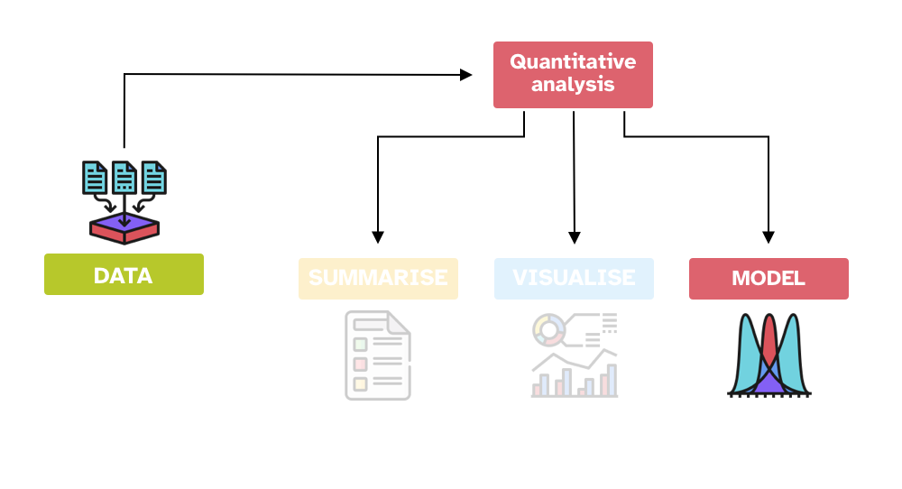
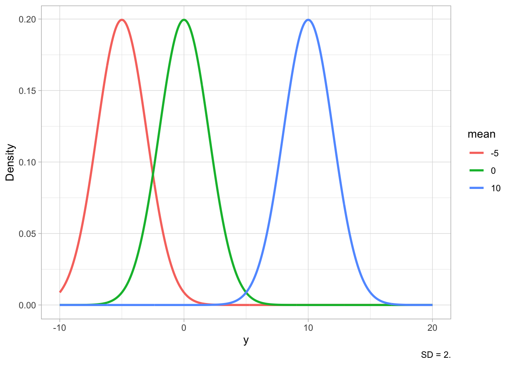
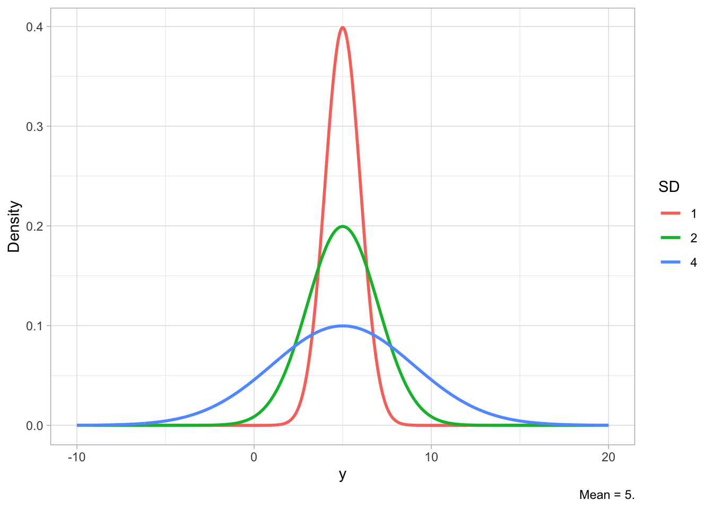
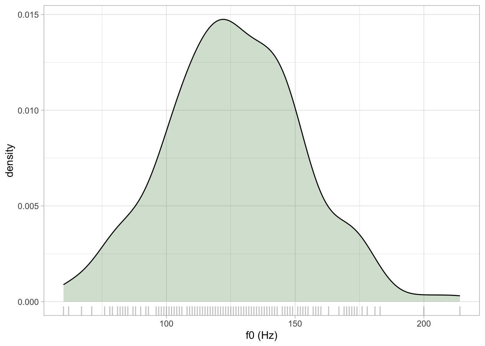
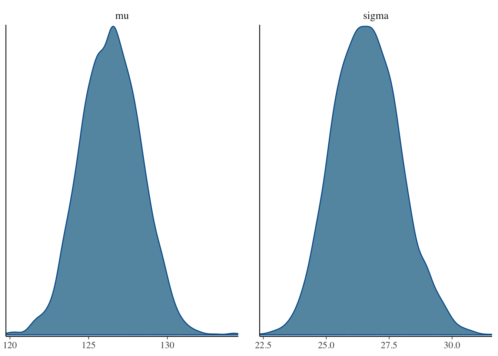
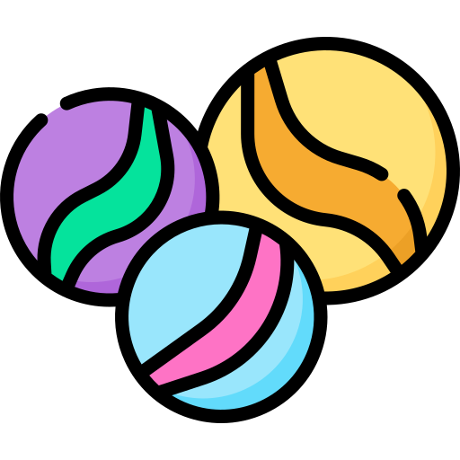
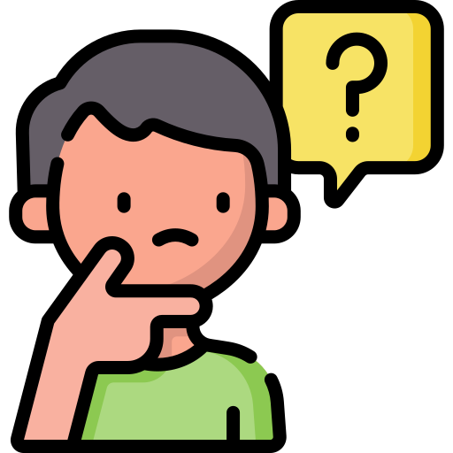
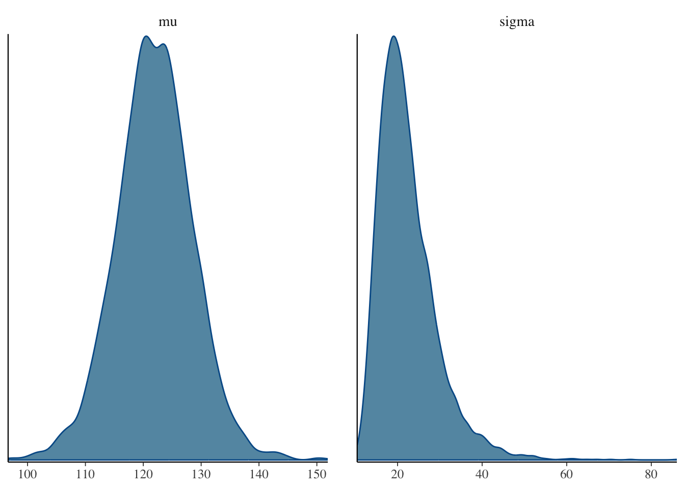

set.seed(812)
f0 <- rnorm(200, 125, 25) |> round()
f0[1:10] [1] 79 146 111 114 112 147 167 98 143 102Intro to statistical modelling

\[y \sim Gaussian(\mu, \sigma)\]


rnorm(n, mean, sd)
. . .
Simulate fundamental frequency f0.
set.seed(812)
f0 <- rnorm(200, 125, 25) |> round()
f0[1:10] [1] 79 146 111 114 112 147 167 98 143 102
SIMULATION
You have \(\mu, \sigma\) and you generate \(y\).
ESTIMATION

You have \(y\) and you estimate \(\mu\) and \(\sigma\).
When you simulate data, you know the population mean and SD. In research, you don’t. You just have observations.
Statistical modelling allows you to estimate the mean and SD of the population from the sample. This is statistical inference. Bayesian Gaussian models do exactly that: estimate mean and SD.
\[\begin{align} f0 & \sim Gaussian(\mu, \sigma)\\ \mu & = ...\\ \sigma & = ... \end{align}\]
\[\begin{align} f0 & \sim Gaussian(\mu, \sigma)\\ \mu & = P_\mu\\ \sigma & = P_\sigma \end{align}\]
f0_tib <- tibble(f0 = f0)
library(brms)
f0_bm <- brm(
f0 ~ 1,
family = gaussian,
data = f0_tib,
file = "cache/f0_bm"
)
posterior_summary(f0_bm, probs = c(0.1, 0.9))[1:2,] |> round() Estimate Est.Error Q10 Q90
b_Intercept 126 2 124 129
sigma 27 1 25 28

the lower the sample size
the higher the uncertainty
set.seed(4256)
f0_tib <- tibble(f0 = sample(f0, 5))
f0_bm_small <- brm(
f0 ~ 1,
family = gaussian,
data = f0_tib,
file = "cache/f0_bm_small"
)
posterior_summary(f0_bm_small, probs = c(0.1, 0.9))[1:2,] |> round() Estimate Est.Error Q10 Q90
b_Intercept 122 7 114 130
sigma 22 7 15 31